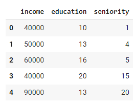
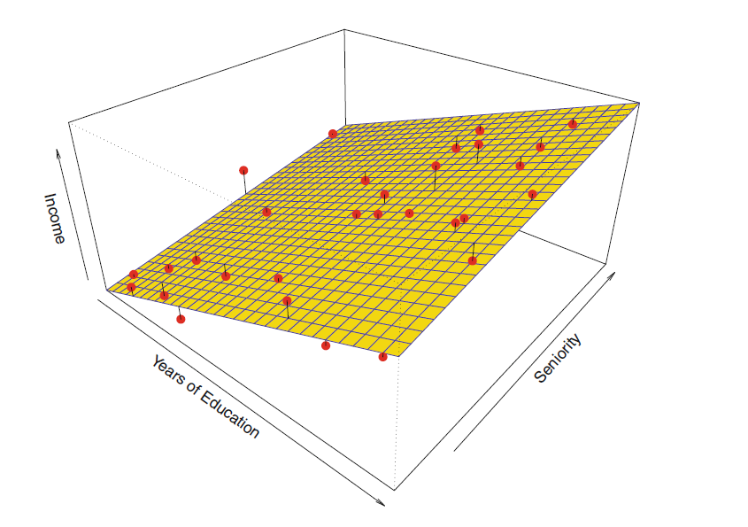
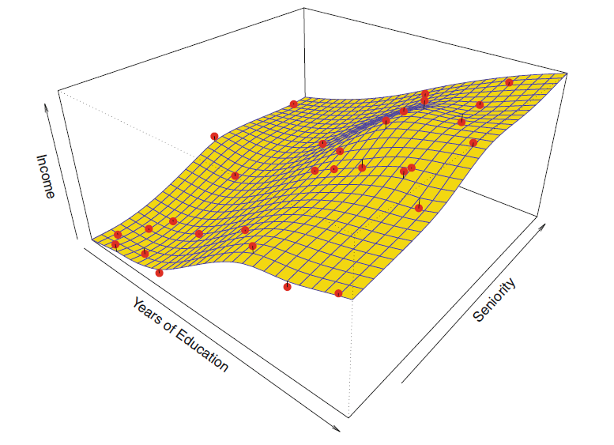
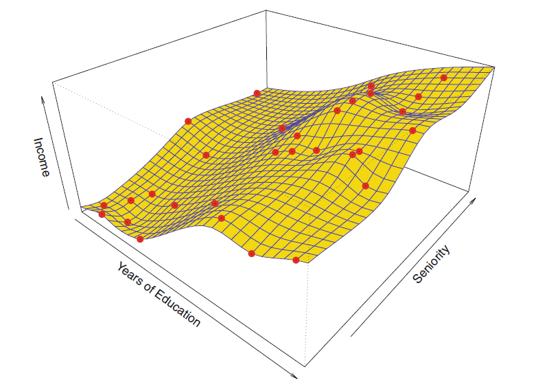
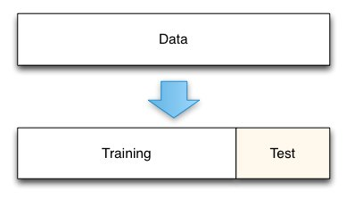
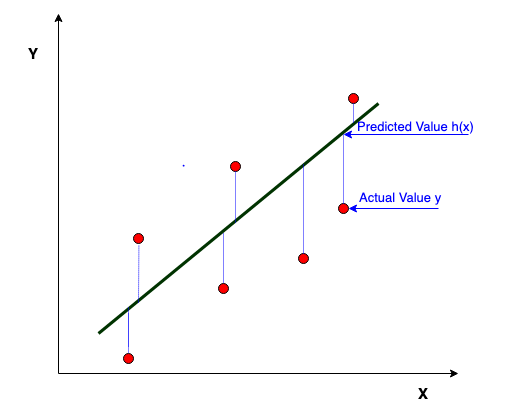
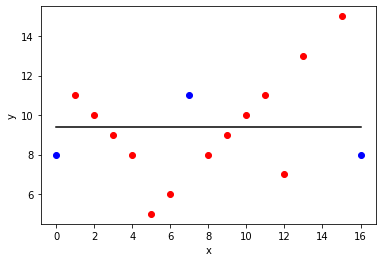
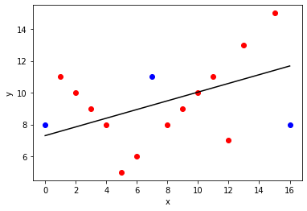
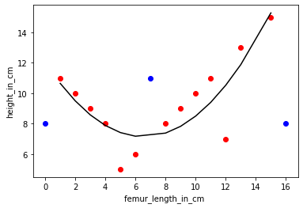

Machine Learning in der Produktion - Regression
Serafin Kollegger & Julian Huber

Lineare Regression
- Regressions-Modelle sagen eine kontinuierliche Variable \(y\) auf Basis von \(p\) Prädiktoren \(X_1, X_2, ..., X_p\) vorher.
- Der Zusammenhang zwischen den Prädiktoren und der Zielvariablen wird durch die Regressionskoeffizienten \(\beta_0, \beta_1, ..., \beta_p\) beschrieben, welche die Steigung der Beziehung zwischen den Prädiktoren und der Zielvariablen darstellen.
- Die Prädiktoren können kontinuierliche oder kategorische Variablen sein. Die Regressionskoeffizienten, werden anhand der Trainingsdaten geschätzt.
\(f(\vec{X}) = Y = β_0 + β_1X_1 + β_2X_2 + ... + β_pX_p.\)
Beispiel: Lineare Regression für das Einkommen basierend auf Bildung und Berufserfahrung


\(\text{income} ≈ β_0 + β_1 \cdot \text{education}+ β_2 \cdot \text{seniority}\)
\(\text{income} ≈ β_0 + β_1 \cdot \text{education}+ β_2 \cdot \text{seniority}\)
\(\text{income} ≈ 20 \text{k€} + 1.5 \frac{\text{k€}}{\text{a}} \cdot \text{education}+ 1 \frac{\text{k€}}{\text{a}} \cdot \text{seniority}\)
- \(\beta_0\): Ungebildete Arbeiter ohne Ausbildung erhalten ein Gehalt von 20.000 €
- \(\beta_1\): Ein Jahr Ausbildung führt zu einem um 1.500 € höheren Gehalt
-
\(\beta_2\): Ein Jahr Berufserfahrung führt zu einem um 1.000 € höheren Gehalt
-
Lineare Regression ist ein parametrischer und relativ unflexibler Ansatz
- sie kann nur lineare Funktionen erzeugen
- nur zwei Faktoren (Linien) zu interpretieren
Matrix Representation Linearer Modelle
- \(x_{i,j}\)… Wert des Prädiktors \(j\) der Beobachtung \(i\)
- \(X_0=x_{:,0}\)… sind alle \(1\), so dass \(x_{j,0} \cdot \beta_0 = \beta_0\) der Bias-Term ist (d.h., der Y-Achsenabschnitt / Ordinatenabschnitt / Aufpunkt des linearen Regressionsmodells)
- \(\beta_j\)… Gewicht des Prädiktors \(j\)
Alle Werte eines Prädiktors \(j\) für alle Beobachtungen \(i\) sind in der Spalte \(j\) der Matrix \(X\) enthalten.
Alle Prädiktoren für eine Beobachtung \(i\) sind in der Zeile \(i\) der Matrix \(X\) enthalten.
\(\text{income} ≈ β_0 + β_1 \cdot \text{education}+ β_2 \cdot \text{seniority}\)
- Observation 1
- \(y_1=\beta_0 + \beta_1 \cdot x_{1,1} + \beta_2 \cdot x_{1,2}\)
- \(40.000=\beta_0 + \beta_1 \cdot 10 + \beta_2 \cdot 1\)
- Observation 2
- \(y_2=\beta_0 + \beta_1 \cdot x_{2,1} + \beta_2 \cdot x_{2,2}\)
- \(50.000= \beta_0 + \beta_1 \cdot 13 + \beta_2 \cdot 4\)
Training Parametrischer Modelle
- \(\text{income} ≈ β_0 + β_1 \cdot \text{education}+ β_2 \cdot \text{seniority}\)
- Die Form ist festgelegt, aber wir können drei Parameter anpassen, um die Anpassung zu verbessern (\(β_0, β_1, β_2\))
- \(β_0\) ist der Achsenabschnitt
- Die Parameter einer linearen Regression werden durch Minimierung der Summe der quadrierten Fehler geschätzt
- Die Lösung kann entweder analytisch oder numerisch erfolgen, man spricht dabei auch vom "Training" oder "Fitten" des Modells
- Schätzer werden mit einen Dachzeichen versehen, z.B. \(\hat{\beta}_0, \hat{\beta}_1, \hat{\beta}_2\) bzw. \(\hat{f}(\vec{X})\) und \(\hat{Y}\)
Test- und Trainingsdaten
Nicht-parametrische Modelle

- \(Y=f(X)\)
- keine explizite Annahme über die funktionale Form von \(f\) (z.B. lineare Funktion)
- aber eine Art Algorithmus von \(f\)
- nahe an den Datenpunkten
- ohne zu rau oder wellig zu sein
- z.B. ist eine handgezeichnete Linie ein nicht-parametrisches Modell
Overfitting

- häufiger bei flexiblen, nicht-parametrischen Methoden
- perfekte Vorhersage für jeden Punkt in den Trainingsdaten
- wahrscheinlich keine gute Vorhersage für Punkte, die nicht in den Trainingsdaten sind
Aufteilung der Stichprobe in Trainings- und Testdaten

- Trainingsdaten: die Daten, die wir zum Aufbau des Modells verwenden (z.B. zum Finden/Anpassen der richtigen Parameter für das Modell)
- Testdaten: Zurückgehaltene Stichprobe, die wir verwenden können, um zu testen, wie gut das Modell mit unbekannten Daten umgeht
- Häufige Aufteilung: 70% Trainingsdaten, 30% Testdaten zufällig ausgewählt
Abwägung zwischen Vorhersagegenauigkeit und Modellinterpretierbarkeit
- parametrische Modelle sind in der Regel einfacher zu interpretieren
Fehlermaße
- Messung der Güte im Training und Performance des Modells auf Testdaten
\(Y = f(\vec{X}) + \epsilon\)
- der Fehler jeder Vorhersage \(e_j\) zeigt uns, wie gut die Vorhersagen mit den beobachteten Daten übereinstimmen
- Der mittlere quadratische Fehler (\(\text{MSE}\)) ist ein gängiges Genauigkeitsmaß,

🧠 Trainings- vs. Testdatensatz
- Viele Methoden minimieren den \(\text{MSE}\) während des Trainings (Trainings-\(\text{MSE}\), In-Sample-\(\text{MSE}\))
- im Allgemeinen interessiert uns nicht wirklich, wie gut die Methode während des Trainings auf den Trainingsdaten funktioniert,
- sondern wie unsere Methoden auf zuvor ungesehenen Testdaten funktionieren (Out-of-Sample-\(\text{MSE}\))
Anpassung von Daten mit einem Modell mit geringer Flexibilität
- (d.h., der Durchschnitt aller roten Punkte der Trainingsdaten)
-
nur ein Parameter \(\beta_0\)
-
schwarz: Vorhersage
- rot: Trainingsdaten (mittlere Anpassung)
- blau: Testdaten (gute Anpassung)

Anpassung von Daten mit einem Modell mit mittlerer Flexibilität
-
zwei Parameter \(\beta_0\) und \(\beta_1\)
-
schwarz: Vorhersage
- rot: Trainingsdaten (gute Anpassung)
- blau: Testdaten (gute Anpassung)

Anpassung von Daten mit einem Modell mit hoher Flexibilität
-
drei Parameter \(\beta_0\), \(\beta_1\), \(\beta_2\)
-
schwarz: Vorhersage
- rot: Trainingsdaten (sehr gute Anpassung)
- blau: Testdaten (schlechte Anpassung)

Lineare Regression in Python
- Sie Jupyter Notebook
Regression.ipynbim nächsten Abschnitt - Wir verwenden die Python-Bibliothek
scikit-learnfür die Implementierung der linearen Regression und weiterer Modelle - Alternativ können Sie auch die
statsmodels-Bibliothek verwenden, welche jedoch stärker auf statistische Tests und Hypothesentests ausgerichtet ist
Alternative Regressionsmodelle
- Polynomiale Regression: Erweitert die lineare Regression, indem sie die Prädiktoren durch Polynome höherer Ordnung erweitert
- Multi-Layer Perceptron (MLP): Ein neuronales Netzwerk, das für Regressionsprobleme verwendet wird
- Gradient Boosting: Eine Methode, die viele schwache Lernalgorithmen kombiniert, um ein starkes Modell zu erstellen
- SciKit Learn bietet viele weitere Regressionsmodelle, die Sie verwenden können

🏆 Aufgabe 12.3 (20%): Regressionsmodell für Endgewicht
- Abgabeformalien: Fügen sie ein Kapitel in ihrer Dokumentation hinzu, in dem Sie die Ergebnisse der Regression dokumentieren und geben Sie die Datei
reg_<Matrikelnummer1-Matrikelnummer2-Matrikelnummer3>.csvmit ab - Erstellen Sie ein Lineares Regressionsmodell zur Vorhersage des Endgewichts anhand aller sinnvollen Daten
- Erstellen Sie für Ihren Report eine Tabelle, welche die genuzten Spalten (
X) für die Vorhersage (y) enthält und den MSE-Wert für die jeweiligen Spalten
| Genutzte Spalten | Modell-Typ | MSE-Wert (Training) | MSE-Wert (Test) |
|---|---|---|---|
[Vibration_index_blue] |
Linear | 0.5 | 0.6 |
[Vibration_index_blue,Vibration_index_blue] |
Logistic | 0.7 | 0.8 |
| Spalte 1, Spalte 2 | SVM | 0.9 | 1.0 |
- Schreiben Sie die Formel für das beste Lineare Regressionsmodell auf in der Form \(y = mx + b\) incl. der Parameter
- Machen Sie eine Prognose für das folgende Datenset
X.csvmit Ihrem besten Modell - Als Orientierung kann folgendes Notebook dienen docs/8_Regression_Python.ipynb, welches auch im nächsten Abschnitt vorgestellt wird
- Speichern Sie die Prognose in einer CSV-Datei
reg_<Matrikelnummer1-Matrikelnummer2-Matrikelnummer3>.csvund dokumentieren Sie Ihre Ergebnisse in der Markdown-Datei
Flaschen ID, y_hat
1, 45.3
2, 43.2